C# Game Server (TCP)
접속 흐름
IOCP / 비동기Listener가 클라 접속 대기 → ClientSession 생성 → RecvBuffer/SendBuffer 초기화. 클라는 Connector로 비동기 Connect → ServerSession 생성. 서버/클라 대칭 구조.
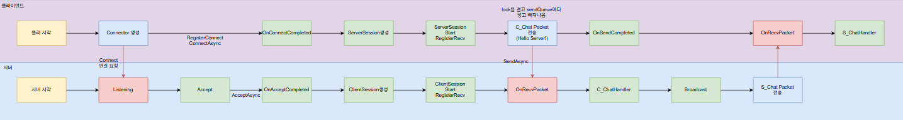
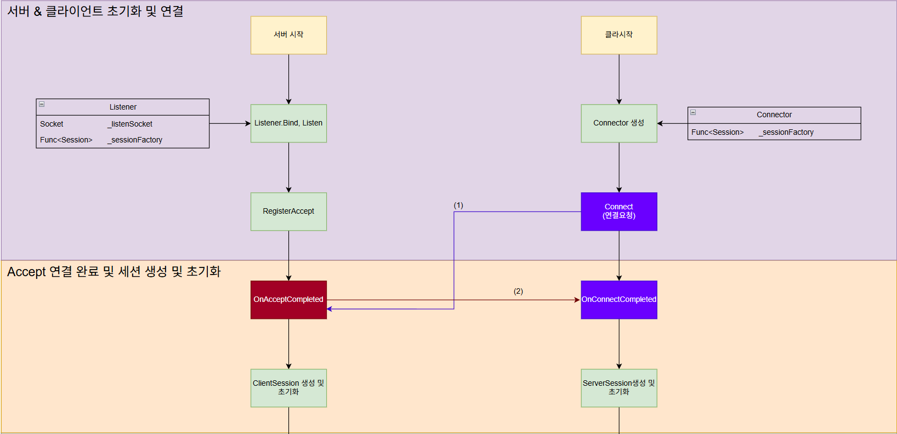
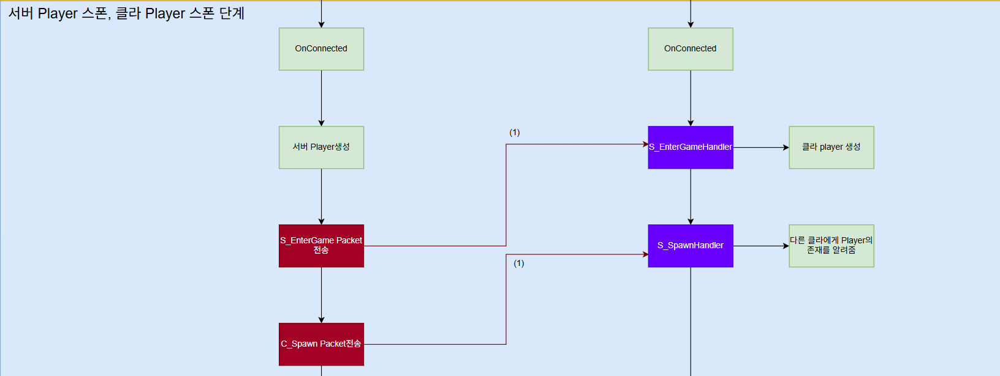
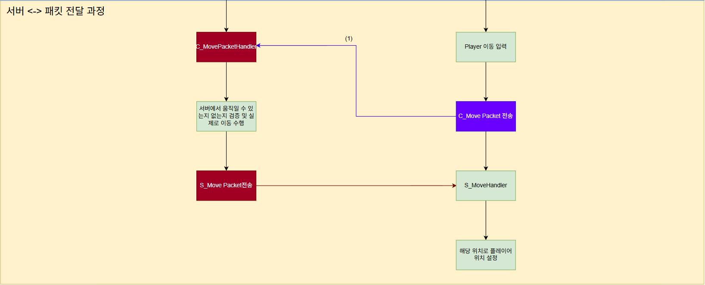
Session
비동기 IO / lock 분리소켓 1개의 수명주기를 캡슐화. _sendQueue에 쌓고 _pendingList로 옮겨 배치 송신. Interlocked.Exchange로 Disconnect 1회 보장. 수신은 콜백 단일 경로, 송신만 최소 임계영역(_lock).
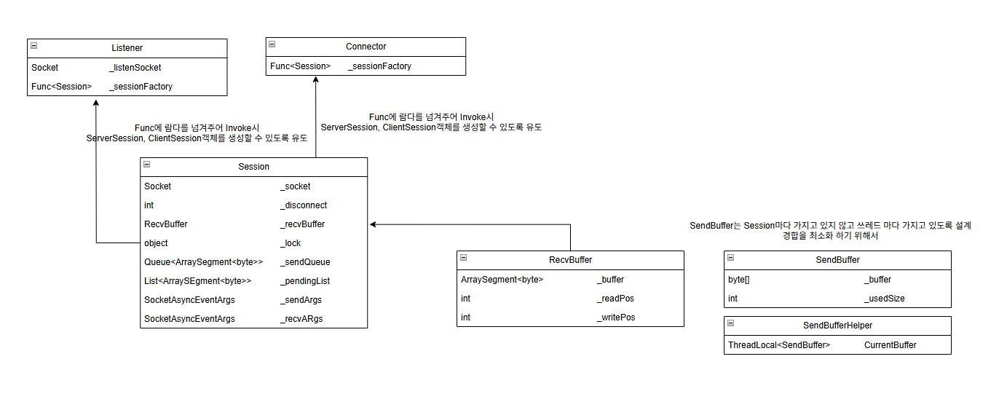
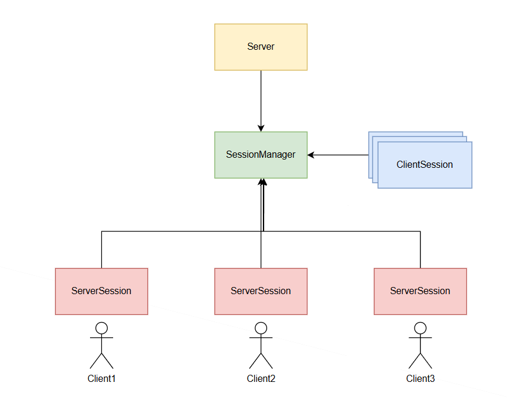
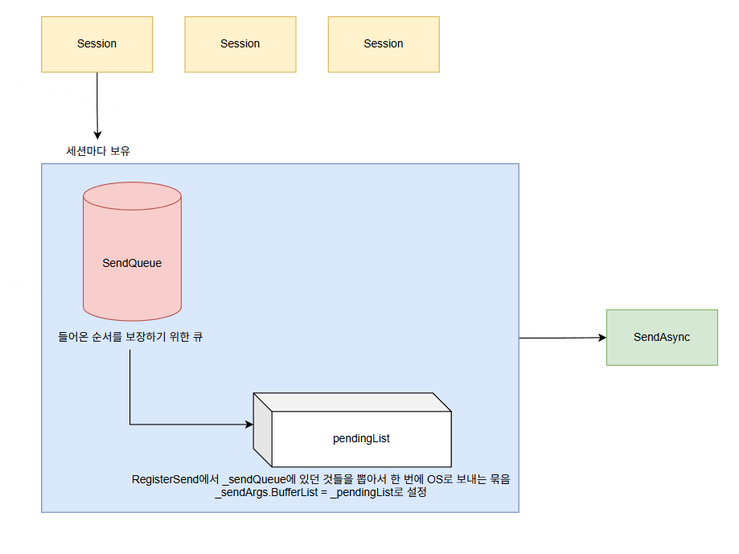
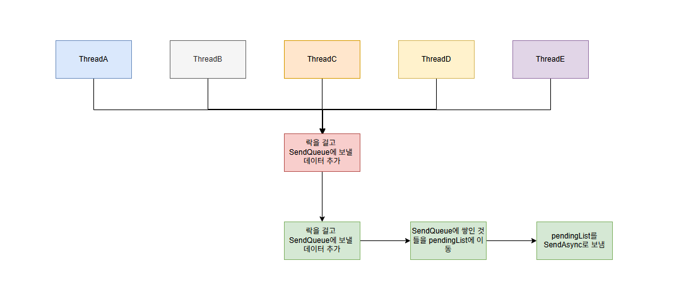
📝 Session Send + RegisterSend 핵심
public void Send(ArraySegment<byte> sendBuff) {
lock (_lock) {
_sendQueue.Enqueue(sendBuff);
if (_pendingList.Count == 0)
RegisterSend();
}
}
void RegisterSend() {
while (_sendQueue.Count > 0) {
var buff = _sendQueue.Dequeue();
_pendingList.Add(buff);
_sendArgs.BufferList = _pendingList;
}
_socket.SendAsync(_sendArgs);
}RecvBuffer
커서 / Zero-alloc단일 배열 + _readPos/_writePos 커서. WriteSegment로 OS에 쓸 공간 제공, ReadSegment로 앱에 읽을 영역 제공. Clean() 1회 복사로 커서 리셋. 세션별 인스턴스로 락 불필요.
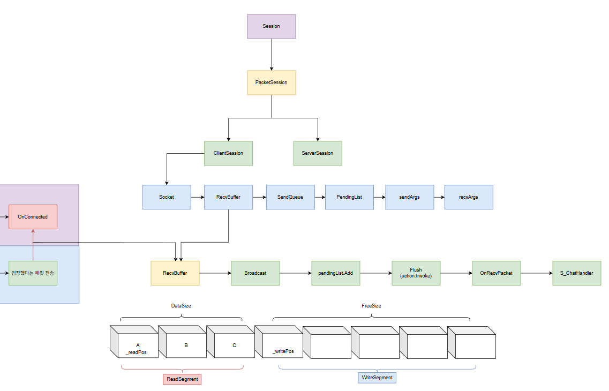
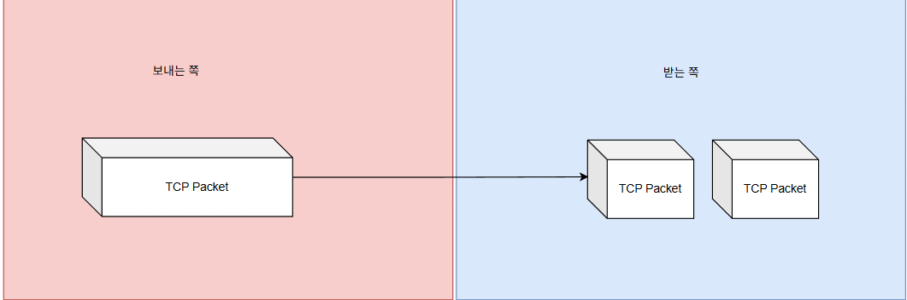
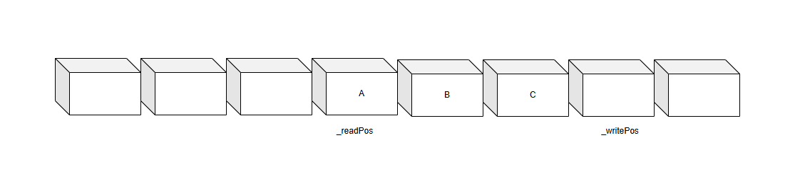
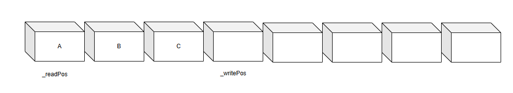
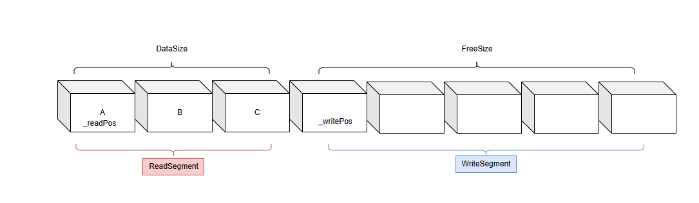
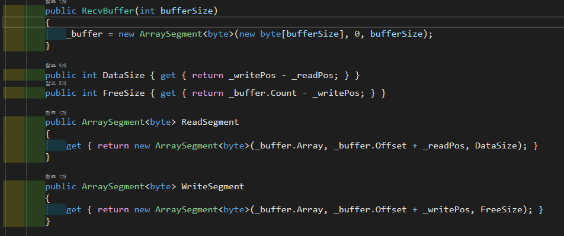
📝 Clean() 핵심
public void Clean() {
int dataSize = DataSize; // _writePos - _readPos
if (dataSize == 0)
_readPos = _writePos = 0;
else {
Array.Copy(_buffer, _readPos, _buffer, 0, dataSize);
_readPos = 0;
_writePos = dataSize;
}
}SendBuffer
ThreadLocal / 청크ThreadLocal<SendBuffer>로 스레드별 대용량 청크(400KB) 1개 배치. Open(reserve) → Close(used) 선형 할당. GC 압박 제거 + 송신 경로 락 불필요.
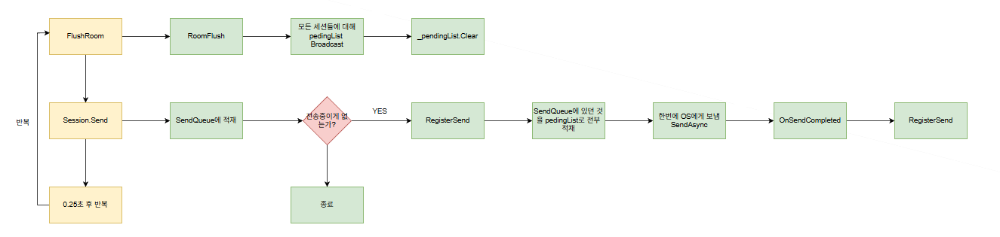
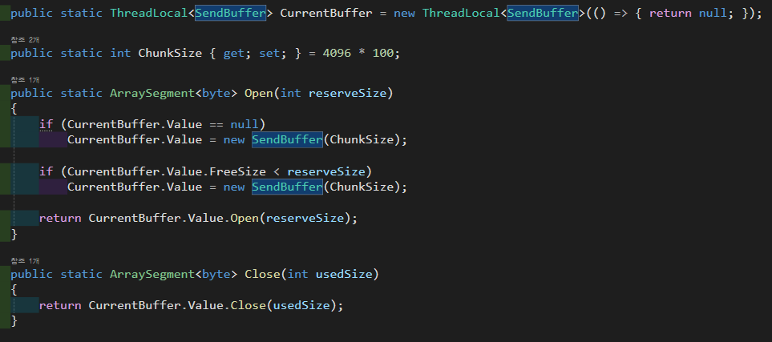
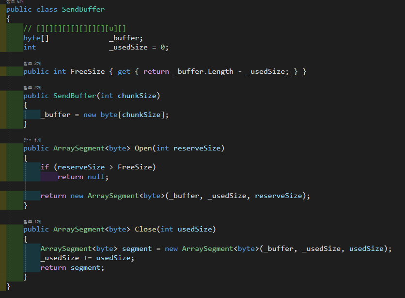
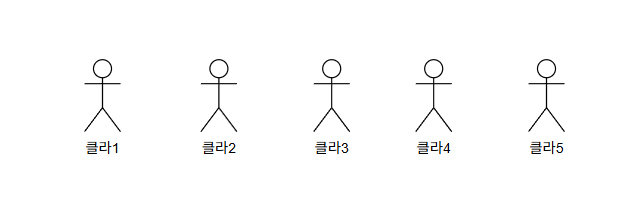
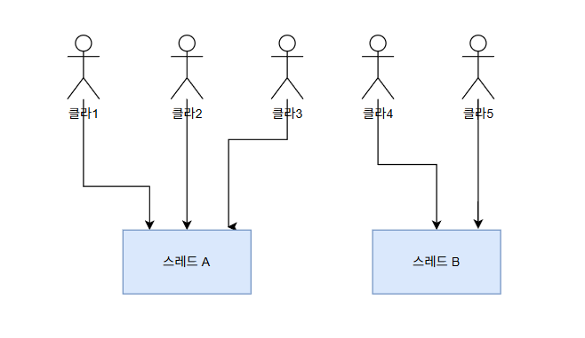
PacketSession + 직렬화
길이 프레이밍 / Span[size(2)][id(2)][payload] 고정 헤더. OnRecv를 sealed하여 헤더→완전성→OnRecvPacket 반복 호출. Span<byte> 기반 Zero-alloc 직렬화/역직렬화.
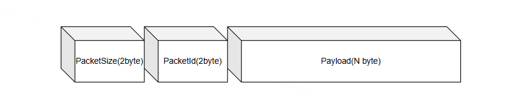
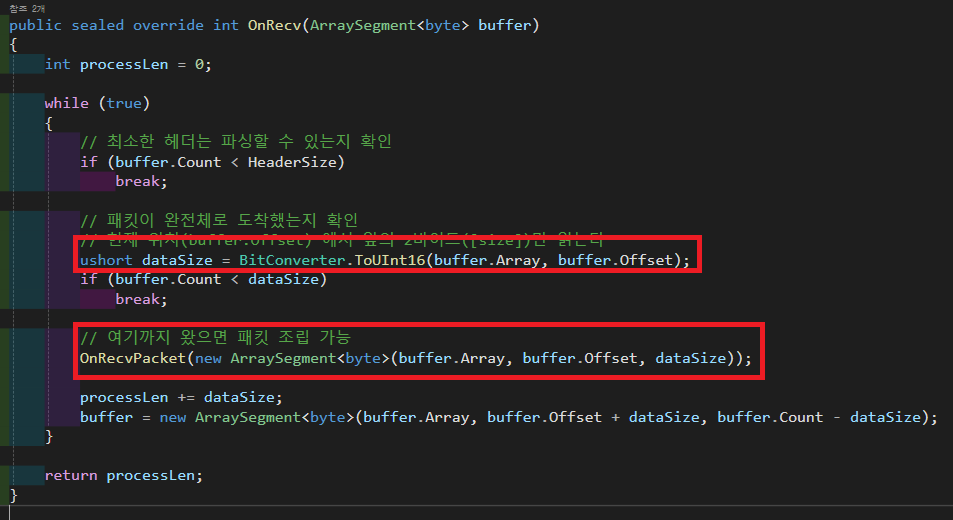
📝 PacketSession.OnRecv while 루프
public sealed override int OnRecv(ArraySegment<byte> buffer) {
int processLen = 0;
while (true) {
if (buffer.Count < HeaderSize) break;
ushort dataSize = BitConverter.ToUInt16(buffer.Array, buffer.Offset);
if (buffer.Count < dataSize) break;
OnRecvPacket(new ArraySegment<byte>(
buffer.Array, buffer.Offset, dataSize));
processLen += dataSize;
buffer = new ArraySegment<byte>(
buffer.Array, buffer.Offset + dataSize, buffer.Count - dataSize);
}
return processLen;
}패킷 자동생성
PDL.xml / 배치 스크립트PDL.xml 스키마 → PacketFormat 템플릿 기반 코드 방출 → GenPackets.cs + PacketManager.cs 자동 생성. 배치 스크립트로 클라/서버 양쪽 복사. 스키마 변경 시 오타/불일치 완전 제거.
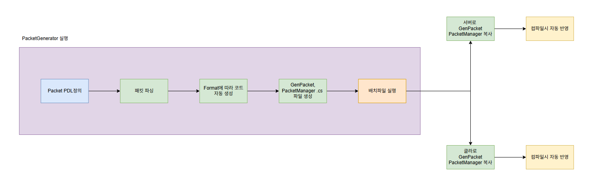
📝 PDL.xml + 배치 스크립트
<!-- PDL.xml -->
<PDL>
<packet name="S_Chat">
<string name="chat"/>
<int name="playerId"/>
</packet>
</PDL>:: GenPackets.bat
START PacketGenerator.exe
XCOPY /Y GenPackets.cs "..\Server\Packet\"
XCOPY /Y GenPackets.cs "..\Client\Packet\"
XCOPY /Y PacketManager.cs "..\Common\"JobQueue
Command Pattern / 배치 송신요청(Push)과 실행(Flush) 분리. Queue<Action> + _flush 플래그로 단일 실행 흐름. 락 경합 최소화 + 이벤트 순서 보장. _pendingList에 축적 → Flush() 배치 송신으로 시스템콜 감소.
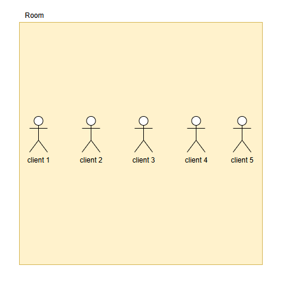
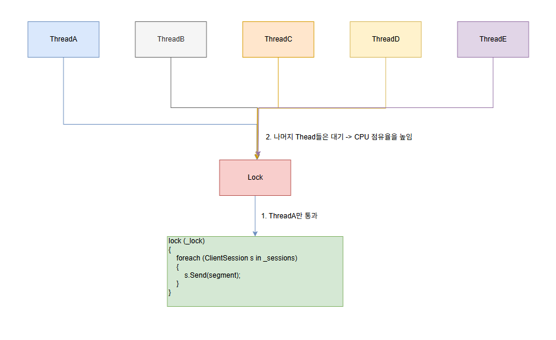
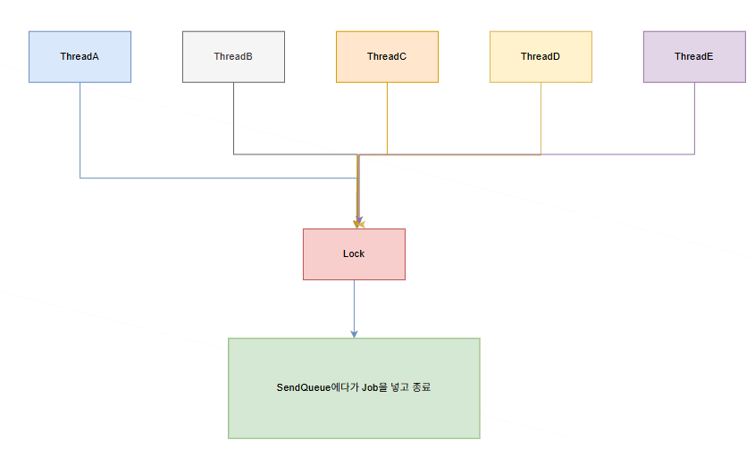
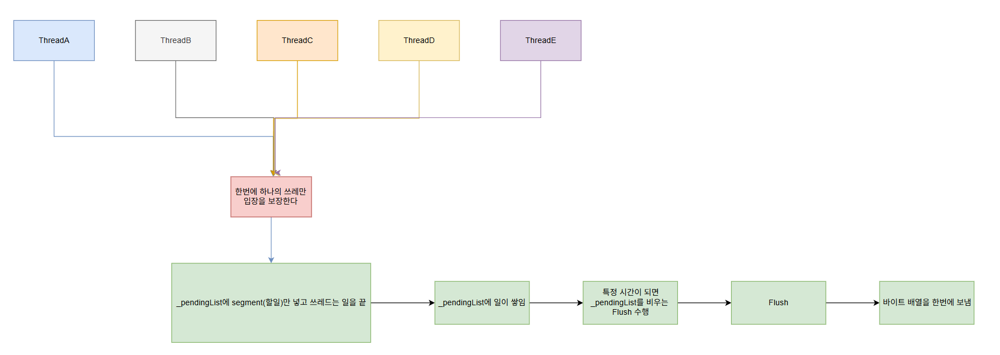
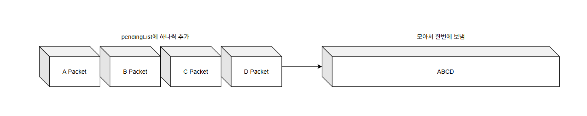
📝 JobQueue Push/Flush 핵심
public void Push(Action job) {
lock (_lock) {
_jobQueue.Enqueue(job);
if (_flush == false) {
_flush = true; // 최초 Push한 스레드만 Flush 진입
}
}
}
public void Flush() {
while (true) {
Action action;
lock (_lock) {
if (_jobQueue.Count == 0) {
_flush = false;
return;
}
action = _jobQueue.Dequeue();
}
action.Invoke();
}
}JobTimer
우선순위 큐 / O(logN)PriorityQueue<execTick, Action> 기반 틱 스케줄러. Push(action, tickAfter) 예약 → Flush()에서 현재 시각분만 꺼내 락 밖에서 실행. Flush/리트라이/주기 작업의 타이밍 중앙 통제.
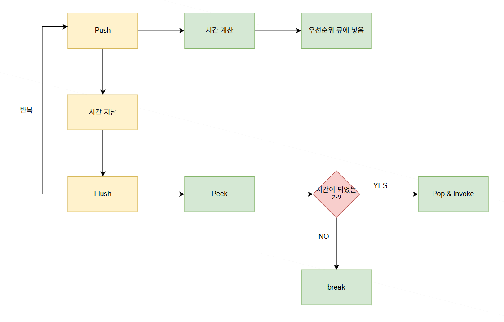
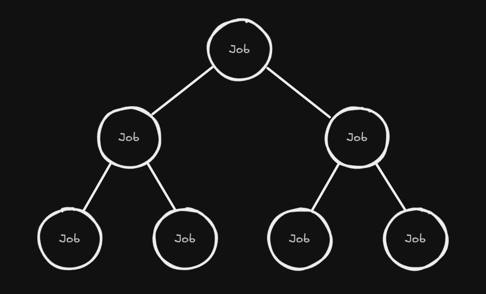
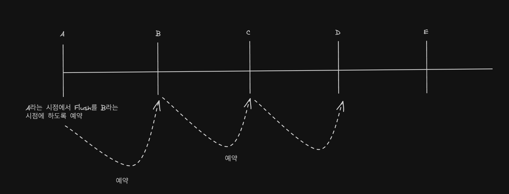
📝 JobTimer Push + Flush 핵심
public static void Push(Action action, int tickAfter = 0) {
lock (_lock) {
_pq.Push(new JobTimerElem {
execTick = Environment.TickCount64 + tickAfter,
action = action
});
}
}
public static void Flush() {
while (true) {
lock (_lock) {
if (_pq.Count == 0) return;
if (_pq.Peek().execTick > Environment.TickCount64) return;
action = _pq.Pop().action;
}
action.Invoke();
}
}